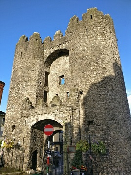

History
The first town defences, a motte and bailey had been built at Millmount which protected the settlements, date to the 1190s. The banks were made from earth, topped with wooden towers and infront of these further protection was given in the form of deep ditches. In the thirteenth century the construction of stone walls began. However, it wasn’t until the fourteenth century that walls of stone actually appeared. Despite this, the defences were strong enough to withhold an attack in 1315-16 by a scottish army lead by Edward the Bruce. The total area protected on the south side of the town was 33 acres. On the opposite side of the river, 80 acres was protected by walls. This made Drogheda one of the largest walled towns in Ireland at the time. The town was comparable in size to Dublin, Kilkenny, Bristol and Oxford.
Battle sounds
Information
| Days | Open | Closed |
|---|---|---|
| Monday | 11.00 | 15.00 |
| Tuesday | 11.00 | 15.00 |
| Wednesday | 11.00 | 15.00 |
| Thursday | 09.00 | 16.00 |
| Friday | 09.00 | 18.00 |
| Saturday | 10.00 | 16.00 |
| Sunday | closed | |
| Times subject to change | ||
Directions
- Location of the tourist office is West street Drogheda
- Phone: 041 9872843
- Website:Drogheda Tourist Office